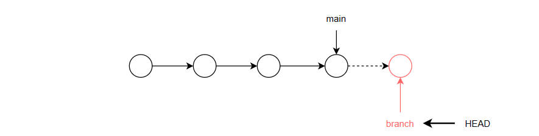
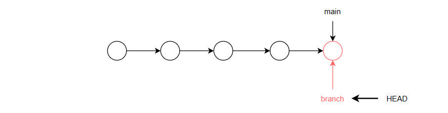

- 初始化仓库 init
-
为当前工作目录生成一个隐藏文件夹 .git，里面是 Git 配置信息
初始化后，该目录将被 Git 托管，可以追踪代码的任何变化
如果生成的 .git 被删除，有关的托管信息将丢失
具体的配置文件 .gitconfig 位于系统盘用户目录下：C:\Users\cnplaman
文件内容就是 Git 配置的用户邮箱等基本信息
默认初始化并创建 master 分支
$ git init
初始化并创建 main 分支 - 推荐
$ git init -b main
- 创建忽略文件 .gitignore
-
.gitignore 文件用于指定 Git 应该忽略的文件和目录，以避免将不需要的文件提交到版本控制系统中
常见有：包依赖、测试文件等
.gitignore 只对未被跟踪的文件生效
如果文件被追踪过，即使后续指定了忽略，仍然会被追踪
可以删除、提交后再重新添加；也可以取消追踪后再提交；文件名有空格应使用引号
git rm --cached demo.html
git rm --cached 'demo copy.html'
- 查看文件状态 status
-
$ git status
Git文件状态
| item |
desc |
| untracked |
未记录的；VS code 中使用标记 U |
| modified |
修改过的；VS code 中使用标记 M |
| staged |
已暂存的 |
| committed |
已提交的 |
- 查看本地仓库提交记录 log
-
按 Q/q 退出
$ git log
commit cc355cbd2a03d61f0ef440706fee7c6257f9fee3 (HEAD -> main, origin/main, origin/HEAD)
Author: glpla <1942194789@qq.com>
Date: Wed Jan 3 12:34:20 2024 +0800
web
commit 32eefc91550a970775689f1f2a7b239bd2b22753
Author: glpla <1942194789@qq.com>
Date: Wed Jan 3 10:48:20 2024 +0800
web
将每条记录压缩成一行查看 --oneline
$ git log --oneline
- 查看远程仓库提交记录 reflog
-
按 Q/q 退出
main 总是指向最新的提交；而 HEAD 指向当前的活动分支；如果没有分支，就指向主分支 main
HEAD 前面的字符串序列是提交的版本号；利用这个可以实现版本穿梭
示例中没有分支，所以 HEAD 指向主分支 main
$ git reflog
cc355cb (HEAD -> main, origin/main, origin/HEAD) HEAD@{0}: commit: web
32eefc9 HEAD@{1}: commit: web
aae5d51 HEAD@{2}: commit: web
065c08e HEAD@{3}: commit: fn
- 撤销本地修改 checkout
-
丢弃工作区的修改
修改了文件，但是没有 add 到暂存区，使用该命令可以撤销对文件的修改，相当于在编辑环境中使用了 CTRL + Z 操作
修改了文件，已经 add 到暂存区，使用该命令，可以拉取暂存区的文件到工作区，覆盖当前文件，相当于放弃了对文件的修改，即和暂存区保持一致
$ git checkout -- file
- 撤销本地/远程提交 reset
-
--mixed：默认行为；撤销最近一次提交，并将更改回退到工作区 - 取消暂存
撤销本地提交
$ git reset commitId
--soft：撤销最近一次提交，但保留工作区和暂存区的更改，不希望丢失任何更改
$ git reset --soft HEAD~1
撤销远程提交 - 版本穿梭
--hard：撤销最近一次提交，并完全丢弃更改，恢复到上一个提交的状态
$ git reset --hard HEAD~1
git reset --hard 版本号
Head is now at xxxxx
- 克隆仓库 clone
-
将远程仓库复制到本地
通常是第一次使用别人的仓库；后续直接拉取 pull 就可以和仓库保持一致
$ git clone url
克隆指定分支到指定目录；如果不指定目录，则使用项目的默认目录
git clone -b <branch> url <dir>
- 拉取仓库 pull
-
在第一次克隆 clone 的基础上，通过拉取和原来仓库保持一致
如果之前提交使用 -u 设置了追踪，可以直接拉取
$ git pull <name> <branch>
$ git pull
- 仓库管理 remote
-
git remote 命令用于管理和查看 Git 仓库中的远程仓库配置。它有多种用法，具体取决于你提供的参数
1. 查看关联的远程仓库 remote
git remote
origin
使用 -v 参数查看关联仓库的详细信息
git remote -v
origin https://github.com/glpla/glpla.github.io.git (fetch)
origin https://github.com/glpla/glpla.github.io.git (push)
2. 添加远程仓库 add
使用 add 添加/关联远程仓库并指定一个 别名 - 因为仓库 url 太长
可以关联多个远程仓库，使用别名区分
$ git remote add <name> <url>
分别为 Github 和 Gitee 指定别名
$ git remote add origin https://github.com/glpla/glpla.github.io.git
$ git remote add gitee https://gitee.com/cnplaman_admin/case1-helloworld.git
3. 删除远程仓库 remove
$ git remote remove <name>
$ git remote rm <name>
4. 重命名远程仓库 rename
$ git remote rename <old-name> <new-name>
5. 修改远程仓库 set-url
$ git remote set-url <name> <new-url>
- 通过分支实现项目的分工协作
- 各分支的操作并不影响主分支；且分支的进度通常要领先于主分支
- 当分支合并到主分支后，主分支的整个时间线才往前推进，进度才能和分支保持一致
- main 总是指向最新的提交；而 HEAD 指向当前的活动分支；如果没有分支，就指向主分支 main
- 只有提交 commit 过1次后才能查看分支
-
无分支时，HEAD指向主分支

分支单独工作，HEAD指向活动分支

分支合并到主分支
- 查看分支
-
当前分支以 * 号表示，且颜色为绿色
只有被追踪的分支才显示 - 提交过
//不带参数：查看本地分支
$ git branch
dev
* master
//查看所有本地和远程跟踪的分支 all
$ git branch -a
dev
* master
//查看分支最近一次提交信息
$ git branch -v
dev 29aee33 1st commit
* master 29aee33 1st commit
//查看远程分支 remote
$ git branch -r
- 创建分支
-
创建仓库的同时创建分支
$ git branch branch_name
创建分支
$ git init -b branch_name
创建并切换分支
$ git checkout -b branch_name
- 切换分支 checkout
-
指定要切换的分支名
$ git checkout branch_name
- 合并分支 merge
-
通常在主分支合并其它分支
将其它分支合并到主分支；主分支会前进一次 forwards
原有分支仍然存在
$ git merge branch_name
Updating 29aee33..c9f8938
Fast-forward
demo.txt | 0
1 file changed, 0 insertions(+), 0 deletions(-)
create mode 100644 demo.txt
- 删除分支
-
指定删除的分支名
只能在当前分支删除其它分支
-d：合并过才允许删除
-D：强制删除，无论是否合并过
$ git branch -d branch_name
删除远程分支
$ git push <name> -d <branch_name>
- 重命名分支
-
-m：如果有同名分支，则拒绝 - 建议
-M：强制命名，如果有同名分支，会被覆盖
$ git branch -m branch_name_old branch_name_new
将当前分支强制命名为main
$ git branch -M main
-
冲突
.主分支提交前进的同时，某一分支也提交。当主分支合并分支时，就会出现冲突
.尽量避免同时操作同一个文件
.主分支面向生成环境，应只做阶段性的合并
.日常工作应使用开发分支和团队分支、个人分支：个人分支合并到团队分支；团队分支合并到开发分支